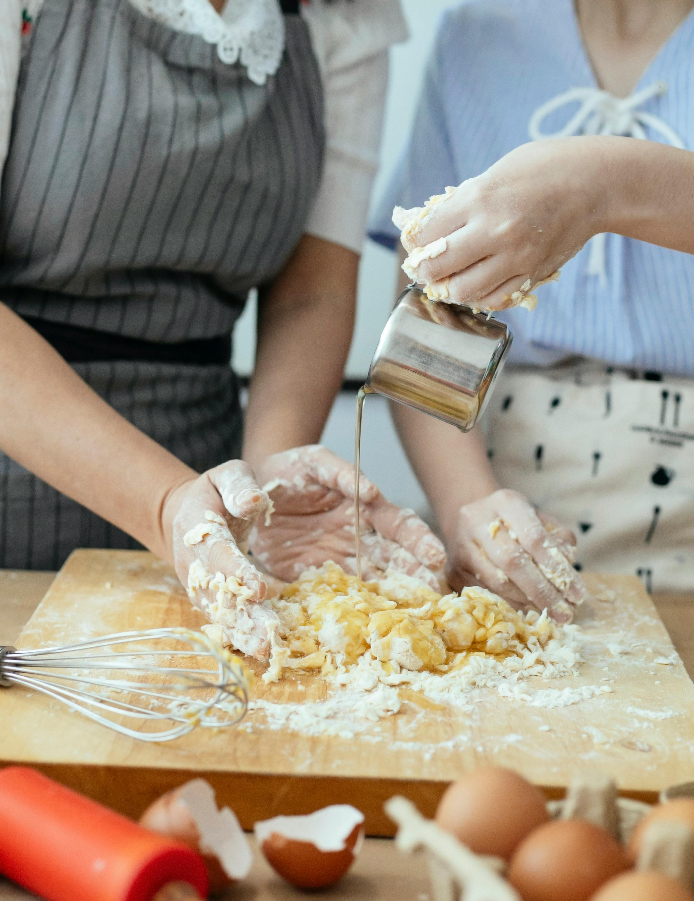
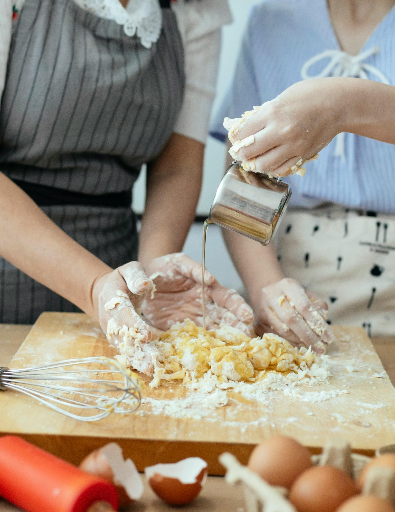

PASATIEMPO 3
Suelo hacer diferentes postres, ya que realmente disfruto hacerlos y me quedan ricos
Me gusta hacer pays, cocadas, pasteles pequeños, etc
Suelo hacer diferentes postres, ya que realmente disfruto hacerlos y me quedan ricos
Me gusta hacer pays, cocadas, pasteles pequeños, etc
